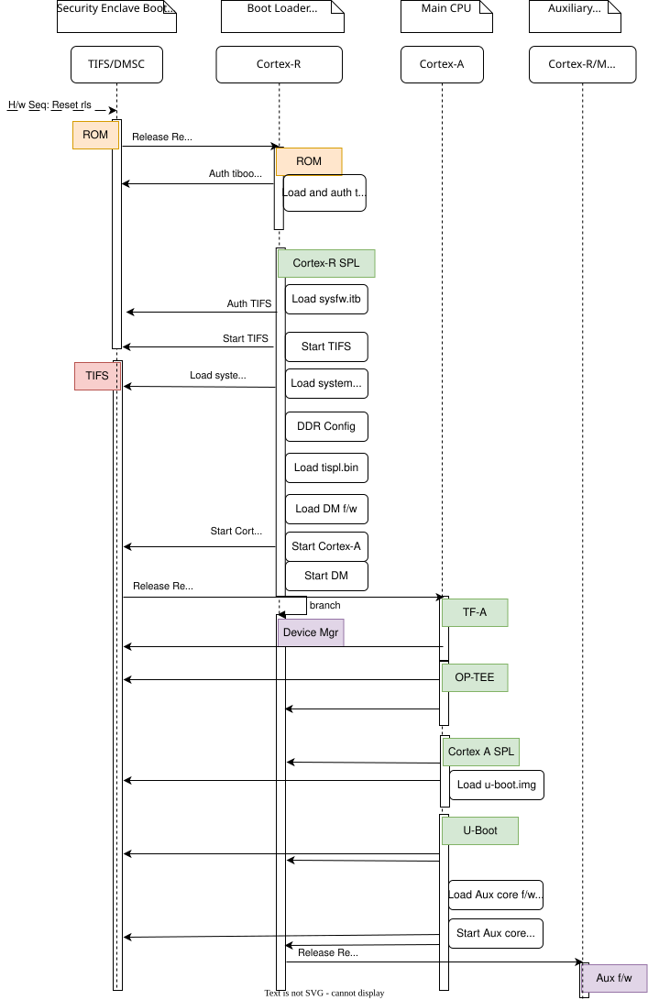
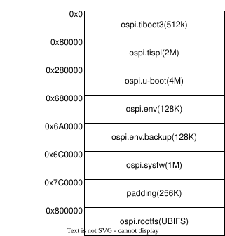

J721E Platforms¶
Introduction:¶
The J721e family of SoCs are part of K3 Multicore SoC architecture platform targeting automotive applications. They are designed as a low power, high performance and highly integrated device architecture, adding significant enhancement on processing power, graphics capability, video and imaging processing, virtualization and coherent memory support.
The device is partitioned into three functional domains, each containing specific processing cores and peripherals:
- Wake-up (WKUP) domain:
Device Management and Security Controller (DMSC)
- Microcontroller (MCU) domain:
Dual Core ARM Cortex-R5F processor
- MAIN domain:
Dual core 64-bit ARM Cortex-A72
2 x Dual cortex ARM Cortex-R5 subsystem
2 x C66x Digital signal processor sub system
C71x Digital signal processor sub-system with MMA.
More info can be found in TRM: http://www.ti.com/lit/pdf/spruil1
Platform information:
Boot Flow:¶
Boot flow is similar to that of AM65x SoC and extending it with remoteproc support. Below is the pictorial representation of boot flow:

Here DMSC acts as master and provides all the critical services. R5/A72 requests DMSC to get these services done as shown in the above diagram.
Sources:¶
Das U-Boot
branch: masterTrusted Firmware-A (TF-A)
branch: masterOpen Portable Trusted Execution Environment (OP-TEE)
branch: masterTI Firmware (TIFS, DM, SYSFW)
branch: ti-linux-firmware
Note
The TI Firmware required for functionality of the system can be one of the following combination (see platform specific boot diagram for further information as to which component runs on which processor):
TIFS - TI Foundational Security Firmware - Consists of purely firmware meant to run on the security enclave.
DM - Device Management firmware also called TI System Control Interface server (TISCI Server) - This component purely plays the role of managing device resources such as power, clock, interrupts, dma etc. This firmware runs on a dedicated or multi-use microcontroller outside the security enclave.
OR
SYSFW - System firmware - consists of both TIFS and DM both running on the security enclave.
Build procedure:¶
Setup the environment variables:
S/w Component |
Env Variable |
Description |
|---|---|---|
All Software |
CC32 |
Cross compiler for ARMv7 (ARM 32bit), typically arm-linux-gnueabihf- |
All Software |
CC64 |
Cross compiler for ARMv8 (ARM 64bit), typically aarch64-linux-gnu- |
All Software |
LNX_FW_PATH |
Path to TI Linux firmware repository |
All Software |
TFA_PATH |
Path to source of Trusted Firmware-A |
All Software |
OPTEE_PATH |
Path to source of OP-TEE |
S/w Component |
Env Variable |
Description |
|---|---|---|
U-Boot |
UBOOT_CFG_CORTEXR |
Defconfig for Cortex-R (Boot processor). |
U-Boot |
UBOOT_CFG_CORTEXA |
Defconfig for Cortex-A (MPU processor). |
Trusted Firmware-A |
TFA_BOARD |
Platform name used for building TF-A for Cortex-A Processor. |
Trusted Firmware-A |
TFA_EXTRA_ARGS |
Any extra arguments used for building TF-A. |
OP-TEE |
OPTEE_PLATFORM |
Platform name used for building OP-TEE for Cortex-A Processor. |
OP-TEE |
OPTEE_EXTRA_ARGS |
Any extra arguments used for building OP-TEE. |
Set the variables corresponding to this platform:
export CC32=arm-linux-gnueabihf-
export CC64=aarch64-linux-gnu-
export LNX_FW_PATH=path/to/ti-linux-firmware
export TFA_PATH=path/to/trusted-firmware-a
export OPTEE_PATH=path/to/optee_os
$ export UBOOT_CFG_CORTEXR=j721e_evm_r5_defconfig
$ export UBOOT_CFG_CORTEXA=j721e_evm_a72_defconfig
$ export TFA_BOARD=generic
$ # we dont use any extra TFA parameters
$ unset TFA_EXTRA_ARGS
$ export OPTEE_PLATFORM=k3-j721e
$ # we dont use any extra OP-TEE parameters
$ unset OPTEE_EXTRA_ARGS
Trusted Firmware-A:
# inside trusted-firmware-a source
make CROSS_COMPILE=$CC64 ARCH=aarch64 PLAT=k3 SPD=opteed $TFA_EXTRA_ARGS \
TARGET_BOARD=$TFA_BOARD
OP-TEE:
# inside optee_os source
make CROSS_COMPILE=$CC32 CROSS_COMPILE64=$CC64 CFG_ARM64_core=y $OPTEE_EXTRA_ARGS \
PLATFORM=$OPTEE_PLATFORM
U-Boot:
3.1 R5:
# inside u-boot source
make $UBOOT_CFG_CORTEXR
make CROSS_COMPILE=$CC32 BINMAN_INDIRS=$LNX_FW_PATH
3.2 A72:
# inside u-boot source
make $UBOOT_CFG_CORTEXA
make CROSS_COMPILE=$CC64 BINMAN_INDIRS=$LNX_FW_PATH \
BL31=$TFA_PATH/build/k3/$TFA_BOARD/release/bl31.bin \
TEE=$OPTEE_PATH/out/arm-plat-k3/core/tee-raw.bin
Target Images¶
In order to boot we need tiboot3.bin, sysfw.itb, tispl.bin and u-boot.img. Each SoC variant (GP, HS-FS and HS-SE) requires a different source for these files.
GP
tiboot3-j721e-gp-evm.bin, sysfw-j721e-gp-evm.itb from step 3.1
tispl.bin_unsigned, u-boot.img_unsigned from step 3.2
HS-FS
tiboot3-j721e_sr2-hs-fs-evm.bin, sysfw-j721e_sr2-hs-fs-evm.itb from step 3.1
tispl.bin, u-boot.img from step 3.2
HS-SE
tiboot3-j721e_sr2-hs-evm.bin, sysfw-j721e_sr2-hs-evm.itb from step 3.1
tispl.bin, u-boot.img from step 3.2
R5 Memory Map:¶
Region |
Start Address |
End Address |
|---|---|---|
SPL |
0x41c00000 |
0x41c40000 |
EMPTY |
0x41c40000 |
0x41c81920 |
STACK |
0x41c85920 |
0x41c81920 |
Global data |
0x41c859f0 |
0x41c85920 |
Heap |
0x41c859f0 |
0x41cf59f0 |
BSS |
0x41cf59f0 |
0x41cff9f0 |
MCU Scratchpad |
0x41cff9fc |
0x41cffbfc |
ROM DATA |
0x41cffbfc |
0x41cfffff |
OSPI:¶
ROM supports booting from OSPI from offset 0x0.
Flashing images to OSPI:
Below commands can be used to download tiboot3.bin, tispl.bin, u-boot.img, and sysfw.itb over tftp and then flash those to OSPI at their respective addresses.
=> sf probe
=> tftp ${loadaddr} tiboot3.bin
=> sf update $loadaddr 0x0 $filesize
=> tftp ${loadaddr} tispl.bin
=> sf update $loadaddr 0x80000 $filesize
=> tftp ${loadaddr} u-boot.img
=> sf update $loadaddr 0x280000 $filesize
=> tftp ${loadaddr} sysfw.itb
=> sf update $loadaddr 0x6C0000 $filesize
Flash layout for OSPI:

Firmwares:¶
The J721e u-boot allows firmware to be loaded for the Cortex-R5 subsystem. The CPSW5G in J7200 and CPSW9G in J721E present in MAIN domain is configured and controlled by the ethernet firmware that executes in the MAIN Cortex R5. The default supported environment variables support loading these firmwares from only MMC. “dorprocboot” env variable has to be set for the U-BOOT to load and start the remote cores in the system.
J721E common processor board can be attached to a Ethernet QSGMII card and the PHY in the card has to be reset before it can be used for data transfer. “do_main_cpsw0_qsgmii_phyinit” env variable has to be set for the U-BOOT to configure this PHY.
Debugging U-Boot¶
See Common Debugging environment - OpenOCD: for detailed setup information.
Warning
OpenOCD support since: v0.12.0
If the default package version of OpenOCD in your development environment’s distribution needs to be updated, it might be necessary to build OpenOCD from the source.
Integrated JTAG adapter/dongle: The board has a micro-USB connector labelled XDS110 USB or JTAG. Connect a USB cable to the board to the mentioned port.
Note
There are multiple USB ports on a typical board, So, ensure you have read the user guide for the board and confirmed the silk screen label to ensure connecting to the correct port.
To start OpenOCD and connect to the board
openocd -f board/ti_j721eevm.cfg